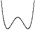
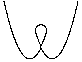
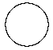

hump
loop-the-loop
circle
Lemniscate
oval

spiral
This simulation shows 2 balls on a roller coaster track. The 2 balls are connected by a spring.
You can change the track shape by clicking a button below. You can drag either ball with your mouse to change the starting position. Try changing gravity, damping or spring stiffness.
The math behind the simulation is shown below. Also available are: open source code, documentation and a simple-compiled version which is more customizable.
|
 hump |
 loop-the-loop |
 circle |
Lemniscate |
oval |
spiral |
This simulation is a variation of the Roller Coaster with Spring, please see that page for more information on the physics and how the simulation is done. The difference here is that the other end of the spring is attached to another ball on the track, instead of being fixed.
We have 4 variables in this simulation:
The force equations for each ball are identical to that shown in the Roller Coaster with Spring simulation except that the position of the "fixed end" of the spring is replaced by the position of the other ball.
This web page was first published October 2002.